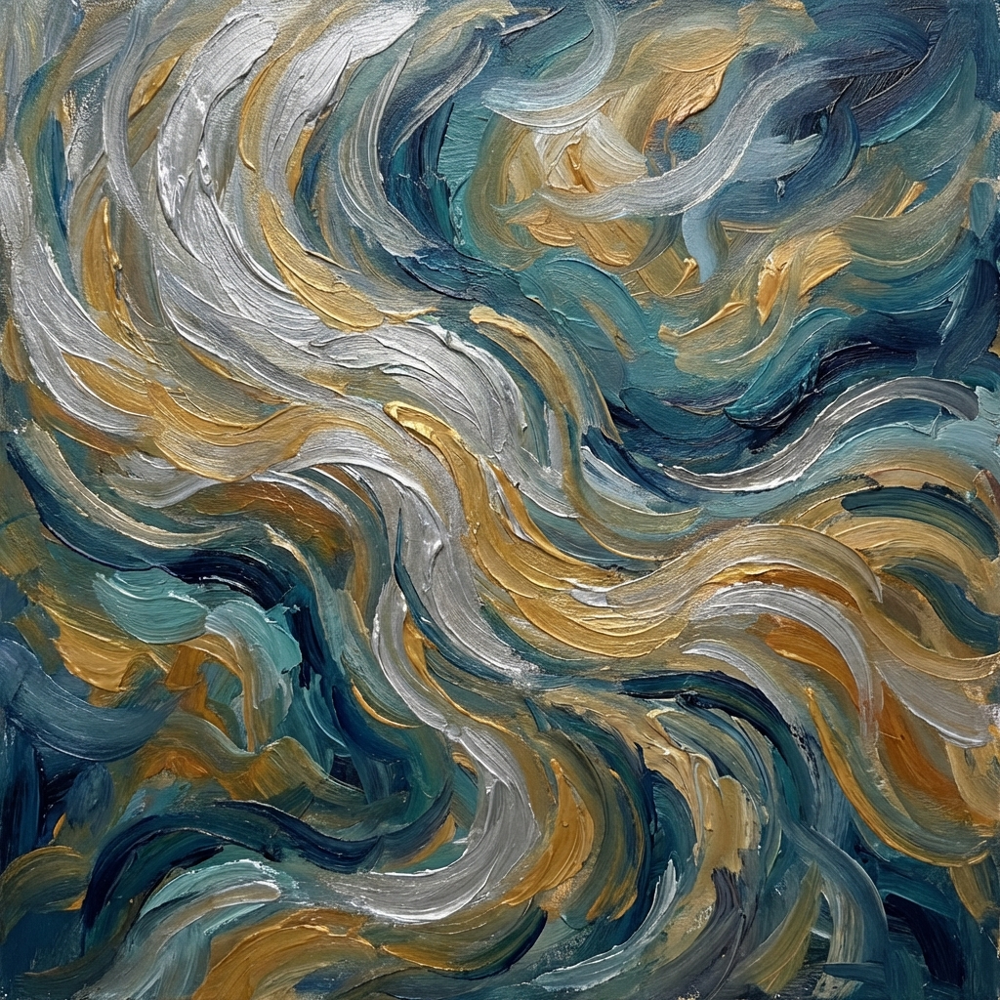

Scorre il tempo

Scorrono le dita tra i miei capelli
come scorre il tempo tra i miei pensieri.
come scorre il tempo tra i miei pensieri.
Passino pure gli anni
se non son passati invano.
se non son passati invano.
Sfuggenti emozioni
si fanno strada tra cuore e mente
e la mia pelle di luna si accende.
si fanno strada tra cuore e mente
e la mia pelle di luna si accende.
Il vento mi sfiora, mitiga le inquietudini
frammenti di mare spiaggiano infine
tra le ciglia socchiuse appena illuminate.
Sempre disfo di notte
ciò che ho tessuto di giorno.
frammenti di mare spiaggiano infine
tra le ciglia socchiuse appena illuminate.
Sempre disfo di notte
ciò che ho tessuto di giorno.
Ma si, passino pure gli anni
se mi regalano
una irrinunciabile consapevolezza
mai esplorata prima
mentre scorre il tempo
tra i miei pensieri.
se mi regalano
una irrinunciabile consapevolezza
mai esplorata prima
mentre scorre il tempo
tra i miei pensieri.
Paola Spremulli